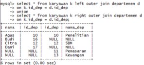

Jobsheet-8: MySQL (Select JOIN)
Topik
Select JOIN
Tujuan
Mahasiswa diharapkan dapat:
- Memahami keterhubungan entitas di dalam basis data
- Memahami jenis-jenis operasi pengambilan data di beberapa entitas
- Mampu menyelesaikan kasus-kasus retrieval yang melibatkan lebih dari satu entitas
Teori
Relationship
Relationship adalah suatu hubungan antara beberapa entitas. Konsep ini sangat penting sekali di dalam basis data, di mana memungkinkan entitas-entitas untuk saling berhubungan satu sama lain. Di dalam sebuah relationship, primary key memiliki peran penting untuk mengaitkan entitas. Selain itu, primary key juga digunakan untuk mendefinisikan batasan keterhubungan.
Join
Join merupakan salah satu konstruksi dasar dari SQL dan basis data. Join dapat didefinisikansebagai kombinasi record dari dua atau lebih tabel di dalam basis data relasional dan menghasilkan sebuah tabel (temporary) baru yang disebut sebagai joined table. Join dapat diklasifikasikan ke dalam dua jenis: inner dan outer.
Inner Join
Inner join pada dasarnya adalah menemukan persimpangan (intersection) antara dua buah tabel. Sintaks inner join diperlihatkan sebagai berikut:
SELECT A1, A2, ..., An FROM r1 INNER JOIN r2 ON r1.join_key = r2.join_keyInner join juga dapat direpresentasikan dalam bentuk implisit.
SELECT A1, A2, ..., An FROM r1, r2 WHERE r1.key = r2.keyMisalkan terdapat tabel A dan B, maka hasil inner join dapat diperlihatkan—sebagai bidang terarsir—dalam diagram Venn seperti Gambar 1.

Gambar 1. Inner Join
Outer Join
Left Outer Join
Left outer join (atau left join) mengembalikan semua nilai dari tabel kiri ditambah dengan nilai dari tabel kanan yang sesuai (atau NULL jika tidak ada nilai yang sesuai).
Sintaks
SELECT A1, A2, ..., An FROM r1 LEFT OUTER JOIN r2 ON r1.join_key = r2.join_keyLeft outer join antara tabel A dan B dapat diilustrasikan dalam diagram Venn seperti Gambar 2

Gambar 2. Left Outer Join
Right Outer Join
Right outer join (atau right join) pada dasarnya sama seperti left join, namun dalam bentuk terbalik—kanan dan kiri. Sintaks right outer join diperlihatkan sebagai berikut:
Sintaks
SELECT A1, A2, ..., An FROM r1 RIGHT OUTER JOIN r2 ON r1.join_key = r2.join_keyRight outer join antara tabel A dan B dapat diilustrasikan dalam diagram Venn seperti Gambar 3

Gambar 3. Right Outer Join
Full Outer Join
Full outer join (atau full join) pada hakekatnya merupakan kombinasi dari left dan right join. Sintaks full outer join diperlihatkan sebagai berikut:
Sintaks
SELECT A1, A2, ..., An FROM r1 FULL OUTER JOIN r2 ON r1.join_key = r2.join_keyBentuk visual dari full outer join dapat diperlihatkan menggunakan diagram Venn seperti Gambar 4.

Gambar 4. Full Outer Join
Selain empat jenis join yang utama di atas, masih ada beberapa variasi join lainnya, seperti CROSS JOIN (cartesian product), NATURAL JOIN, dan sebagainya. Perlu juga diperhatikan, join bisa diimplementasikan dalam bentuk bersarang (nested join). Jadi, di dalam sebuah operasi join bisa terdapat operasi join lainnya.
Praktikum
Relationship
Buat database
nama_kantor(isi dengan nama anda)Buat tabel karyawan dan tabel departemen dengan struktur sebagai berikut:
CREATE TABLE karyawan ( nama varchar(30) NOT NULL, id_dep int(5) NOT NULL ) ENGINE=MyISAM; CREATE TABLE departemen ( id_dep int(5) NOT NULL, nama_dep varchar(30) NOT NULL, PRIMARY KEY (id_dep) ) ENGINE=MyISAM;Data yang digunakan adalah sebagai berikut:
Tabel Karyawan Nama id_dep Agus 10 Budi 16 Citra 12 Dani 17 Tabel Departmen id_dep nama_dep 10 Penelitian 11 Pemasaran 12 SDM 13 Keuangan
Inner Join
Sebagaimana dijelaskan, inner join akan mengembalikan data di tabel A dan B yang sesuai. Sebagai contoh, kita bisa mendapatkan data karyawan yang memiliki departemen.
Data karyawan yang memiliki departemen
Cara 1

Cara 2
Dalam pengambilan data ini, kita juga bisa menspesifikasikan field terkait. Sebagai contoh, hanya mengambil nama karyawan dan nama departemen saja.

Agar penulisan SQL lebih efisien, kita dapat memanfaatkan fitur “ derived table” (atau alias).

Pada pernyataan SQL di atas, tabel karyawan dinotasikan dengan huruf k dan tabel departemen menggunakan huruf d.
Outer Join
Left Outer Join
Data seluruh karyawan (yang memiliki departemen maupun tidak)
Data karyawan yang tidak memiliki departemen
Right Outer Join
Full Outer Join

Cross Join
Cara 1
Cara 2

Tugas
Perhatikan, dalam mengerjakan tugas praktikum ini, sebaiknya pernyataan SQL disimpan di file untuk kemudian dieksekusi. Berikut adalah data-data tabel yang akan digunakan (sesuaikan nilainya agar sama persis).
Tabel mahasiswa nim Nama jenis_kelamin alamat 101 Arif L Jl. Kenangan 102 Budi L Jl. Jombang 103 Wati P Jl. Surabaya 104 Ika P Jl. Jombang 105 Tono L Jl. Jakarta 106 Iwan L Jl. Bandung 107 Sari P Jl. Malang Tabel ambil_mk nim kode_mk 101 PTI447 103 TIK333 104 PTI333 104 PTI777 111 PTI123 123 PTI999 Tabel matakuliah kode_mk nama_mk sks semester PTI447 Praktikum Basis Data 1 3 TIK342 Praktikum Basis Data 1 3 PTI333 Basis Data Terdistribusi 3 5 TIK123 Jaringan Komputer 2 5 TIK333 Sistem Operasi 3 5 PTI123 Grafika Multimedia 3 5 PTI777 Sistem Informasi 2 3
Soal
Dapatkan data mahasiswa yang mengambil matakuliah. Selesaikan dengan pendekatan join eksplisit dan implisit. Hindari duplikasi data.

Kelompokkan data mahasiswa yang tidak mengambil matakuliah berdasarkan jenis kelaminnya, kemudian hitung banyaknya.

Dapatkan nim dan nama mahasiswa yang mengambil matakuliah beserta kode_mk dan nama_mk yang diambilnya. Selesaikan dengan pendekatan join eksplisit dan implisit.
Dapatkan nim, nama, dan total sks yang diambil oleh mahasiswa, di mana total sksnya lebih dari 4 dan kurang dari 10.

Dapatkan matakuliah yang tidak diambil oleh mahasiswa terdaftar (mahasiswa di tabel mahasiswa).